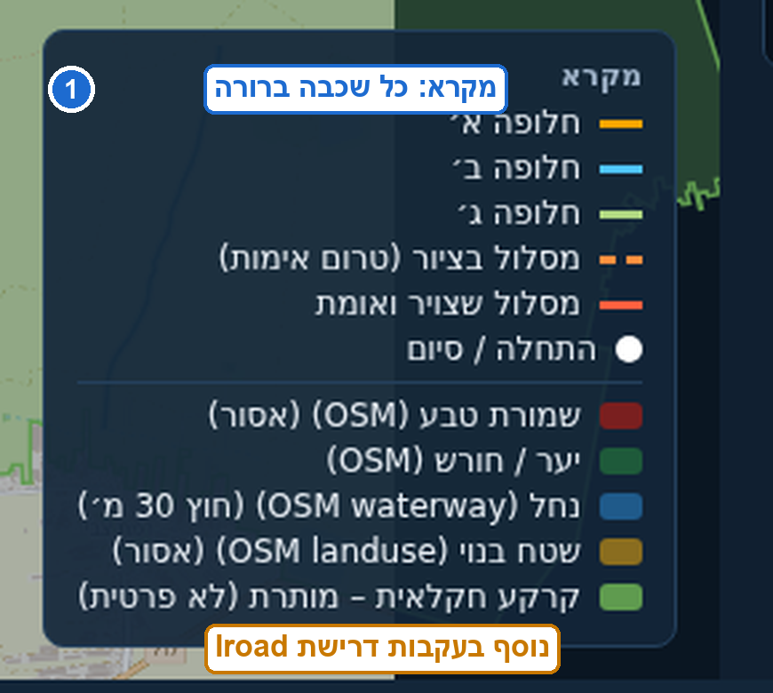
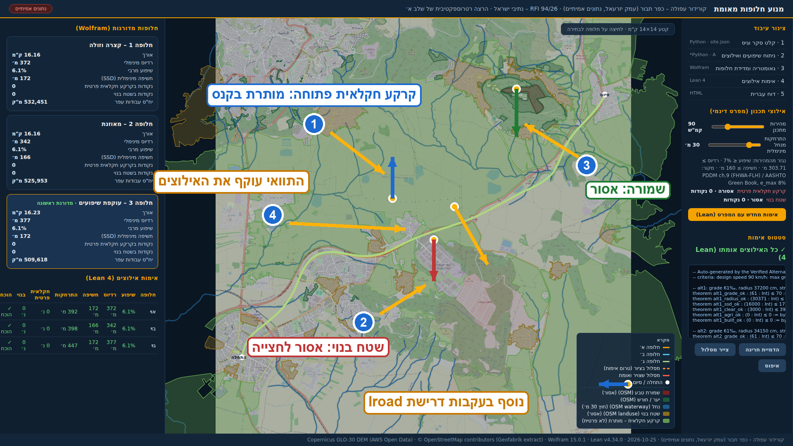
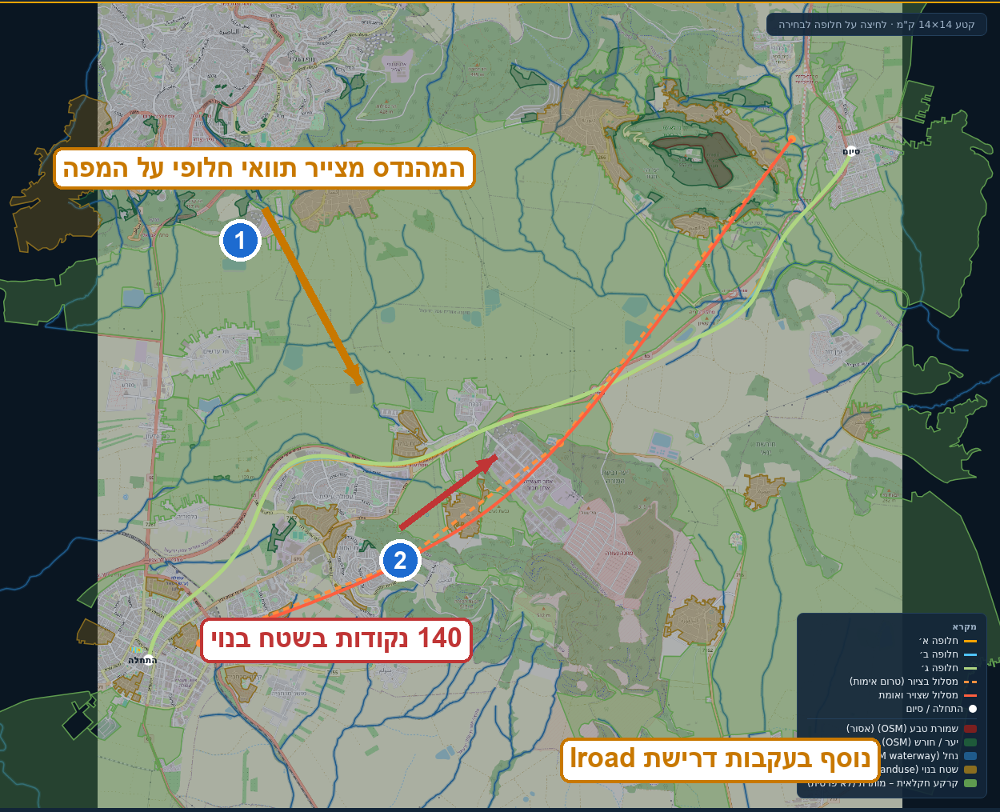
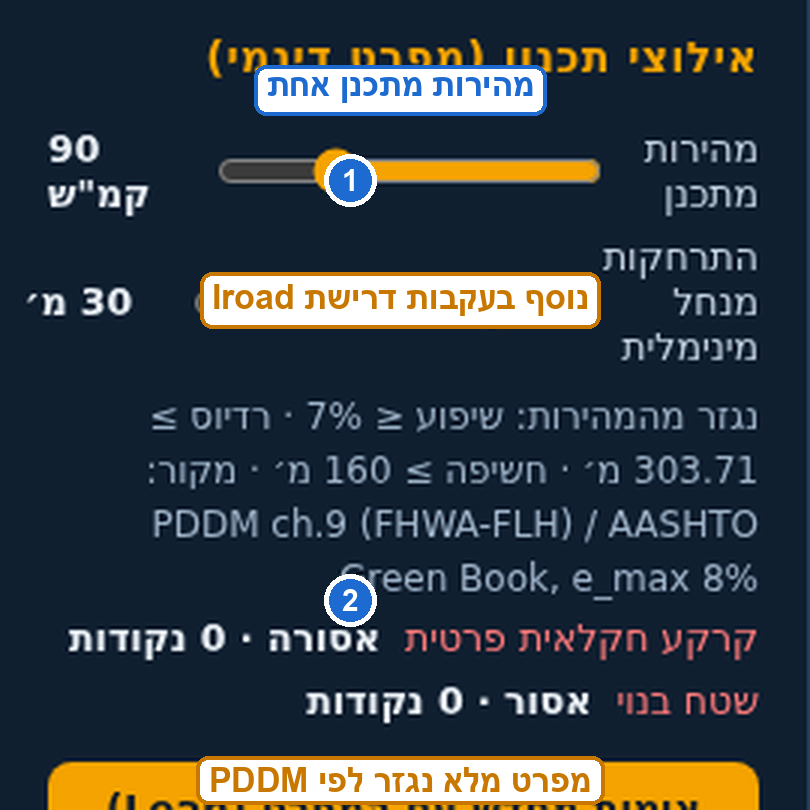
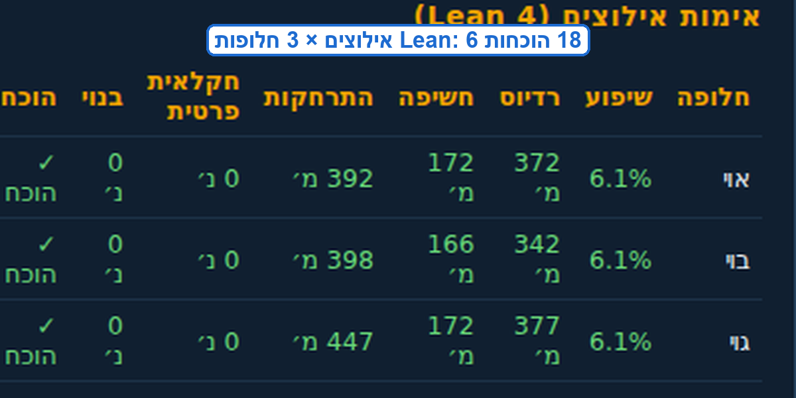
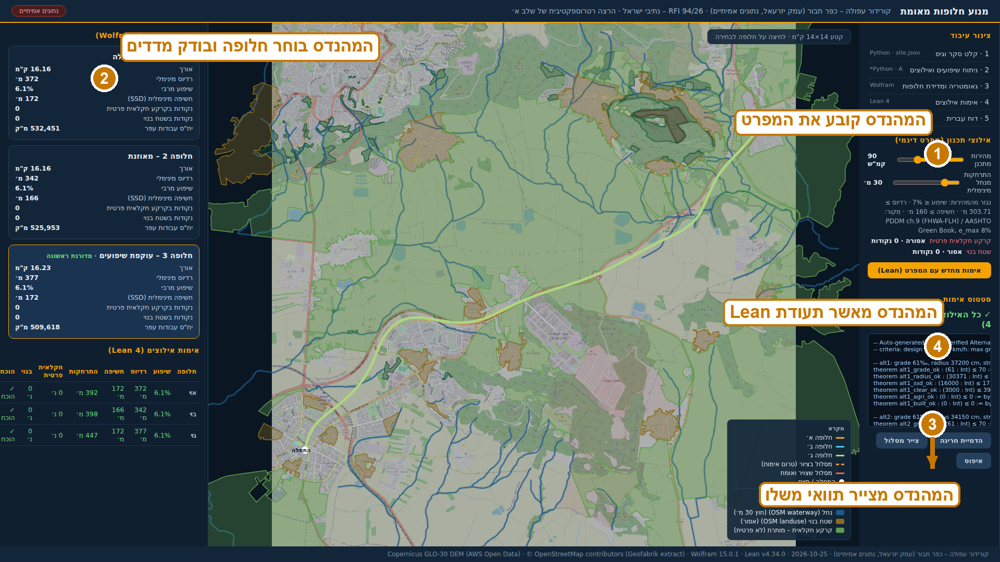

מנוע תוואי מאומת: עדכון בעקבות דרישות Iroad
מה הוספנו מאז המצגת הראשונה, איך זה משתלב באלגוריתם, ואיפה האדם בלולאה
דניאל ליזרוביץ׳, CTO · ESL - Engineering Software Lab · הנדסת תוכנה משובצת, עם ראיות לכל טענה
כל צילום המסך במצגת הוא מהרצה אמיתית על קורידור עפולה – כפר תבור בעמק יזרעאל (25.10.2026), לא תרחיש מתוכנת מראש.
מה ביקשו מ-Iroad, ומה נוסף אצלנו
ארבע דרישות, ארבעה שינויים במנוע, כל אחד מאומת
| דרישת Iroad | מה נוסף במנוע | איפה רואים את זה |
|---|---|---|
| מקרא למפה, שכל שכבה תהיה ברורה נוסף בעקבות דרישת Iroad | מקרא מלא על המפה: חלופות, שמורה, נחל וחיץ, שטח בנוי, קרקע חקלאית | שקף 4 |
| להימנע מקרקע חקלאית נוסף בעקבות דרישת Iroad | קרקע חקלאית פרטית: אסורה, אפס סטיה מקובל. קרקע חקלאית פתוחה: מותרת בקנס עלות | שקף 5 |
| לא לחתוך דרך רחובות עירוניים נוסף בעקבות דרישת Iroad | שטח בנוי: אסור לחצייה, נאכף גם על תוואי שמצייר המהנדס ידנית | שקף 6 |
| לתכנן לפי ספר עקרונות מקצועי נוסף בעקבות דרישת Iroad | קריטריוני התכנון נגזרים אוטומטית ממהירות מתכנן לפי ה-PDDM של FHWA וה-Green Book של AASHTO | שקפים 7–8 |
בנוסף: אדם בלולאה בכל נקודת החלטה (שקף 9) ובקרת גרסאות מלאה (שקף 10) – שתי הדרישות העקיפות שעמדו מאחורי כל השאר.
מקורות הנתונים: מאיפה, מתי, ובאיזו רמת אמון
| מקור | מה הוא נותן | מתי נשלף | רישוי |
|---|---|---|---|
| Copernicus GLO-30 דמ"ג (AWS Open Data) | טופוגרפיה, רזולוציית 30 מ׳ – הבסיס לשיפועים, תצליל ועבודות עפר | נשלף אוטומטית בכל הרצה (25.10.2026), בתוך דקות | פתוח, ציבורי |
| OpenStreetMap (מיצוי Geofabrik של ישראל) | שטח בנוי, קרקע חקלאית, שמורות טבע, נחלים, כבישים ויישובים | אותה הרצה, אותו תאריך | ODbL, קרדיט בכותרת התחתונה |
| GovMap (WFS פתוח, חלקות PARCEL_ALL) | גבולות חלקות קדסטריות – לעקיפת חלקות | נבדק 25.10.2026: אין שדה בעלות ב-API הפתוח | שימוש ציבורי |
| מפרט התכנון (PDDM / Green Book) | קריטריונים: רדיוס, שיפוע, חשיפה – נגזרים ממהירות מתכנן | מוטמע כטבלאות נתונים בקוד (25.10.2026) | תקן ציבורי FHWA/AASHTO |
- לולאת הרענון היא חלק מהמוצר: פקודה אחת שולפת מחדש את כל הריבוע 14×14 ק"מ, כולל סימון תאריך השליפה לשקיפות מלאה
- פער מוכר ומטופל: גם OSM וגם GovMap הפתוח אינם מסמנים בעלות על קרקע חקלאית – ראו הסבר בשקף 5
- בפיילוט: אותו מבנה קלט יקבל CAD/GIS וסקרים של הגוף המתכנן, בלי שינוי קוד
מקרא למפה
נוסף בעקבות דרישת Iroad
כל שכבה מזוהה בעין: חלופות בצהוב/תכלת/ירוק, האדום אסור, הכתום אסור, הירוק בהיר מותר בקנס

המקרא כמו שהוא מופיע בהדגמה, בהגדלה: כל סימון ותווית שלו
- הבקשה הייתה מדויקת: מפה בלי מקרא מחייבת את מי שמציג להסביר כל צבע בעל פה, וכל טעות בהסבר היא טעות בהחלטה
- המקרא חי עם המפה: הוא נבנה מאותן שכבות שהאלגוריתם קורא, אז הוא לא יכול להתיישן מול הנתונים
- כל שקף מפה במצגת הזאת חתום באותה שכבת מקרא, כולל קרדיטים מלאים בכותרת התחתונה של ההדגמה
קרקע חקלאית
נוסף בעקבות דרישת Iroad

שכבות האילוץ על קורידור עפולה – כפר תבור: 1 קרקע חקלאית פתוחה, 2 שטח בנוי, 3 שמורה, 4 תוואי מאומת
- ההתפתחות של הדרישה: תחילה "אסור לגעת בקרקע חקלאית בכלל". בדיקה על הקורידור האמיתי הראתה שזה לא אפשרי: עמק יזרעאל הוא רצף חקלאי, ואין תוואי בכלל בלי לעבור על קרקע חקלאית
- ההגדרה המעודכנת שאושרה: קרקע חקלאית פרטית אסורה (אפס נקודות, בלי יוצא מן הכלל), קרקע חקלאית פתוחה מותרת בקנס עלות שהמנוע עוקף כשיש אלטרנטיבה
- שקיפות מלאה: ב-OSM של הקורידור אף חלקה אינה מסומנת כפרטית (0 מתוך 113), וה-WFS הפתוח של GovMap אינו חושף שדה בעלות. זה כתוב בדוח המנוע עצמו, לא בהערת שוליים
- כשרשימת חלקות פרטיות תגיע מהלקוח, היא נכנסת לאותה הוכחה כשכבה נוספת, בלי שינוי קוד
אי חציית שטח בנוי
נוסף בעקבות דרישת Iroad
"לא חותכים דרך רחובות של עיירה": האיסור נאכף, וגם על המהנדס עצמו

1 המהנדס צייר בכוונה תוואי שחוצה שטח בנוי · 2 המנוע דחה: 140 נקודות בשטח בנוי, Lean מסרב להוכיח
- שטח בנוי הוא שכבת איסור מלאה: קירור האזור העלותיי עם הרחבה, כך שגם עקיפה צמודה נבדקת
- האיסור נבדק נקודה אחר נקודה לאורך כל התוואי, ונכנס להוכחה הפורמלית, לא לבדיקת דגימה
- בהדגמה חיה מול הלקוח ציירנו תוואי כזה בכוונה: הדחייה מגיעה בשניות, עם המספר המדויק של נקודות החריגה
- זה ההבדל בין "מערכת שמציירת יפה" למנוע שאי אפשר לשכנע בשקר
ספר העקרונות: PDDM
נוסף בעקבות דרישת Iroad
הקריטריונים לא מוגדרים ביד: הם נגזרים ממהירות מתכנן אחת, לפי PDDM של FHWA Federal Lands וה-Green Book של AASHTO

1 סליידר מהירות מתכנן אחד · 2 המפרט המלא שנגזר ממנו: שיפוע ≤ 7% · רדיוס ≥ 304 מ׳ · חשיפה ≥ 160 מ׳
-- נגזר אוטומטית מ-V = 90 קמ"ש
R_min = V² / (127 · (e_max + f))
e_max = 8%, f = Green Book
→ R_min = 304 מ׳
שיפוע מרבי (שטח גלי, כביש בין-עירוני)
→ 7%
חשיפת עצירה (SSD), 2.5 שניות תגובה
→ 160 מ׳
-- מקור: PDDM ch.9 (FHWA-FLH) / AASHTO Green Book
- מהנדס מזיז סליידר אחד ומקבל מפרט עקבי ושלם: הטבלאות מסונכרנות במקום אחד
- בפיילוט מחליפים את הטבלאות לתקן הישראלי (ת.ח.ד): עדכון נתונים, לא שינוי קוד
מה ה-PDDM שינה באלגוריתם עצמו
- עקומות אנכיות: התצליר היה קו שבור שעוקב אחרי הקרקע. חשיפת עצירה על פסגות חדות הייתה 30 מ׳ בלבד. הוספנו עיגול גיאומטרי באורך גל תכנון של 250 מ׳ שמכפוף את העקמתיות בפסגות בדיוק כמו עקומת פסגה בתקן, והחשיפה קפצה ל-166–172 מ׳
- מדידת חשיפה (SSD): נערכת נקודה אחר נקודה מעל התצליר המתוכנן, עין בגובה 1.08 מ׳ ומטרה בגובה 0.6 מ׳, מה שהתקן דורש
- 18 הוכחות Lean 4 (6 אילוצים × 3 חלופות) במקום 15: שיפוע, רדיוס, חשיפה, התרחקות מנחל, קרקע חקלאית פרטית, שטח בנוי

טבלת האימות: שיפוע 6.1% מול 7% מותר, חשיפה 166–172 מ׳ מול 160 דרוש, הכל ירוק
אדם בלולאה, בכל נקודת החלטה דרישת Iroad
החשש שנשמע בפגישה: בלי אדם בלולאה, טעות נכנסת בשקט ואף אחד לא יודע מתי ולמה. התשובה שלנו בנויה בתוך המנוע

1 קביעת המפרט · 2 בחירת חלופה ובדיקת מדדים · 3 ציור תוואי חלופי · 4 אישור תעודת Lean
- המנוע מציע, המהנדס מחליט: הוא קובע את הקורידור והמפרט, בוחר בין חלופות מדורגות, מצייר תוואי משלו כדי לאתגר את המנוע, ומאשר את תעודת האימות לפני שכל מספר משמש להחלטה
- שום תוצאה לא עוקפת אדם: המנוע לא חותם תוואי, הוא מחזיר חלופות מדורגות עם ראיות. ההכרעה והאחריות המקצועית נשארות אצל המתכנן
- וכשהמהנדס טועה? המנוע לא מאפשר לו לעבור: תוואי מצויר שחוצה שטח בנוי נדחה בשניות (שקף 6), מפרט לא ריאלי מקבל דחייה מנומקת, וכל טענה נבדקת ב-18 הוכחות
"מי שינה מה, מתי, ולמה": בקרת גרסאות מלאה דרישת Iroad
החשש האמיתי מאחורי "אדם בלולאה": שינוי שנכנס בשקט. אצלנו אין שינוי שקט
-- כל הרצה משאירה עקבות בגרסה out/site_real.json ← נתוני האתר + תאריך שליפה out/metrics.json ← כל מדידה, מספר אחר מספר out/verify.lean ← ההוכחות המלאות out/certificate.json ← תעודת האימות git log ← מי שינה מה, מתי, באיזו גרסה git checkout <גרסה> ← חזרה לכל גרסה, בכל רגע
- כל נתון, מדידה, הוכחה ותעודה מנוהלים בגרסאות. אפשר להשוות שתי הרצות שורה-בשורה ולראות בדיוק מה השתנה
- חזרה לאחור היא פעולה רגילה: כל גרסה של הנתונים, המפרט והתוצאות זמינה לשחזור מלא, בכל רגע
- התעודה קושרת הכל: תעודת Lean מסוימת נוצרה מנתונים בגרסה מסוימת עם מפרט מסוים. אי אפשר לערבב גרסאות בטעות
- השינויים עצמם מתועדים: כל אחד מארבעת השינויים שהצגנו היום הוא קומיט נפרד, עם הסבר והרצה מאמתת
ההדגמה החיה: מה רואים על המסך
1 קרקע חקלאית פתוחה (קנס) · 2 שטח בנוי (אסור) · 3 שמורה (אסור) · 4 תוואי מאומת. בצד ימין: מפרט דינמי ותעודת Lean
- הדגמה של קצה לקצה על נתונים אמיתיים: משליפת נתונים, חלופות מדורגות, מדידה ב-Wolfram, הוכחה ב-Lean 4, דוח עברית
- רגע ההכחשה: מעלים מהירות מתכנן ל-100 קמ"ש, Lean דוחה את כל החלופות בשניות
- רגע האנוש: מציירים תוואי משלכם על המפה, המנוע מודד ב-Wolfram ומכריע ב-Lean
- רגע השחזור: כל הרצה כזו משאירה נתונים, מדידות ותעודה בגרסה, לביקורת אחורה
- ההדגמה כרגע רצה מקומית (http://localhost:8777 בהצגה); פריסה ציבורית בדרך, ראו שקף 12
מה הלאה: פיילוט על קורידור אמיתי, בענן
- הפיצ׳רים הדינמיים (סליידר מהירות, ציור תוואי, הוכחות חיות) הם חלק מהשרת: הם יעלו יחד איתו, לא גרסת תמונות
- לוח זמנים מוצע: שבועיים לפריסה ולתקן ת.ח.ד, ואז פיילוט מתמשך עם המתכננים שלכם בלולאה
ESL - Engineering Software Lab
הנדסת תוכנה משובצת · אופטימיזציה ומיגרציות · SDLC מוגבר ב-AI עם ראיות לכל טענה
דניאל ליזרוביץ׳, CTO
מנוע התוואי המאומת: דוגמה לגישה שלנו, כל טענה מהנדסית היא טענה מוכחת, כל שינוי עוקב, והאדם בלולאה מחזיק בהכרעה ובאחריות